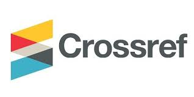
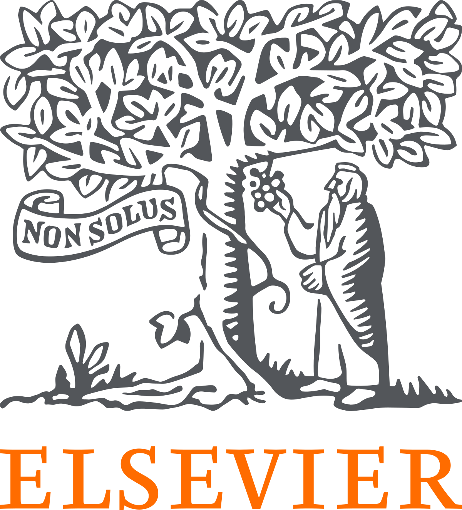
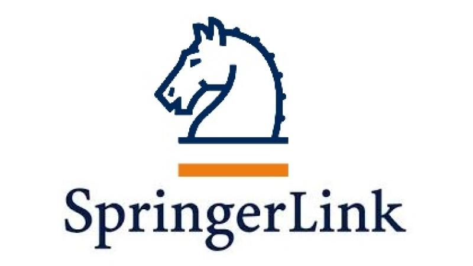

ELSEVIER
You can submit to most Elsevier journals using our online systems. The system you use will depend on the journal to which you submit. Once submitted, your paper will be considered by the editor and if it passes initial screening, it will be sent for peer review by experts in your field.

SPRINGER
SpringerOpen articles and books are subject to high-level peer review, editorial, author and production services, ensuring the quality and reliability of the work. For journals, editorial and peer review policies are available in the “Submission Guidelines” on each journal’s website.
IEEE
Once you have written your article and prepared your graphics, you can submit your article for review. After checking that your article complies with the target journal’s submission guidelines, you are ready to submit. Click the Submit Your Manuscript button on the journal’s home page on IEEE Xplore.
WEB OF SCIENCE
Web of Science is one of the highly reputed journal indexing databases in the entire globe. The most important suggestions for research authors to have their articles successfully published in Web of Science indexed journals are summarized by the framework entitled ‘The Four Cs of scientific writing and publication’ mentioned in our website.
Sci
To submit your manuscript, register and log in to the submission website. Once you have registered, click here to go to the submission form for Sci. All co-authors can see the manuscript details in the submission system, if they register and log in using the e-mail address provided during manuscript submission.
Sci
To submit your manuscript, register and log in to the submission website. Once you have registered, click here to go to the submission form for Sci. All co-authors can see the manuscript details in the submission system, if they register and log in using the e-mail address provided during manuscript submission.
Sci
To submit your manuscript, register and log in to the submission website. Once you have registered, click here to go to the submission form for Sci. All co-authors can see the manuscript details in the submission system, if they register and log in using the e-mail address provided during manuscript submission.
INDEXING
Conferences
ICSSE 2022
Data Council US – Austin 2022
PyCon
DeveloperWeek
FOSDEM
ConFoo.CA
SREcon22 Americas
QCon London
Devnexus
Devoxx
DeveloperWeek Europe
QCon Plus Onlines
RailsConf 2022
GlueCon
ICSE 2022